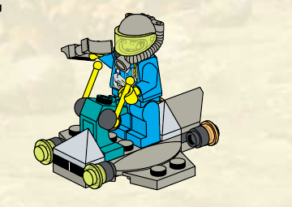
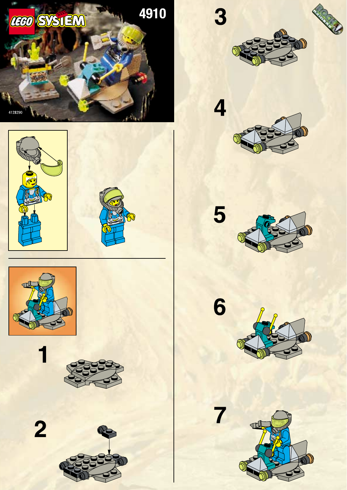

Цільовий вигляд
{kind=link}

{kind=link}
Повне джерело

Дельти для гри
Жодної нової зовнішньої геометрії в цільовому ракурсі. Ігрові відмінності: малий зазор наземного зависання; короткий сигнал сканування від наявної передньої збірки без доданої башти чи рухомого сенсора; невелика плоска командна мітка на задній боковій пластині. Не закривати низ новим кожухом і не додавати двигун.
Масштаб: Один оператор стандартного розміру відносно завершеного кроку 7; довжину та ширину машини не змінювати. Візуальне зависання лишається низьким і не створює нового силуетного вузла. Авторитетна наземна площа Small незмінна.
Мітка команди: Плоскі зовнішні ділянки двох задніх бокових пластин; симетричні маленькі мітки без зміни сірих скосів і бірюзової колонки.
Матеріали: Сіра основа, бірюзова колонка, жовті руків’я; прозорі носові елементи зберігають джерельний відтінок. Емісія лише під час позначеного сигналу, не постійне свічення всіх прозорих деталей.
Конструкція й ракурси
Зібрати плаский відкритий дек і видимі окремі вузли за кроками 3–7 офіційної інструкції. Передня кутова сканерно-інструментальна збірка, місце оператора та задній тримач лишаються трьома читабельними масами. Окрема станція/п’єдестал набору юнітом не є.
- Спереду: широка низька платформа; передня кутова сканерно-інструментальна збірка виступає нижче оператора.
- Збоку: відкрите місце й ноги оператора видно над пласким деком; не добудовувати закриті борти чи кабіну.
- Зверху: одна відкрита платформа з передньою збіркою та заднім тримачем, не катамаран.
- Ззаду: зберегти компактний сервісний тримач і розділені пластинчасті маси; низ та протилежний бік лишаються невідомими.
Стани
| Спокій / рух | Низьке стримане зависання над рельєфом; без літакового крену й обертання круглих носових деталей. |
|---|---|
| Сканування / наявний імпульс | Наявна передня сканерно-інструментальна збірка коротко позначається сигналом; руки лишаються на керуванні. Візуальний імпульс не додає скан-команди чи нового пострілу. |
| Пошкодження | Коротке порушення рівного зависання і згасання одного сигналу; юніт не змінює швидкість від анімації. |
| Знищення | Корпус опускається, відділяються тримач і мала носова деталь; впізнавані пласкі сани залишаються основною масою. |
Межі джерела
Офіційна інструкція не показує строгий низ і протилежний бік; їхню невидиму геометрію не домислювати як hero-масу. Сканерний рух не підтверджений джерелом і не додається в цій цілі. Реальні зазори/опори вирішуються за джерельним силуетом під час T084.
Інструкція не показує строгий низ і протилежний бік. Кадрування цілі не домальоване й не змінює офіційні пікселі.
Рішення директора
Прийняти офіційний крок 7 як ціль без зміни зовнішньої геометрії; дозволити лише низьке зависання, короткий сигнал від штатної передньої збірки та малу командну мітку.